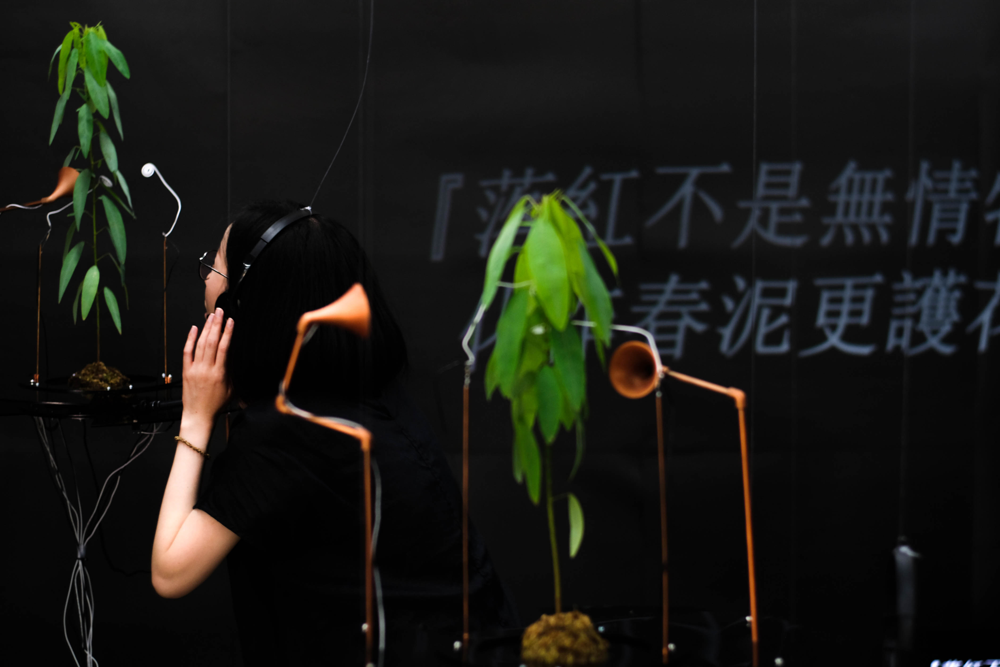
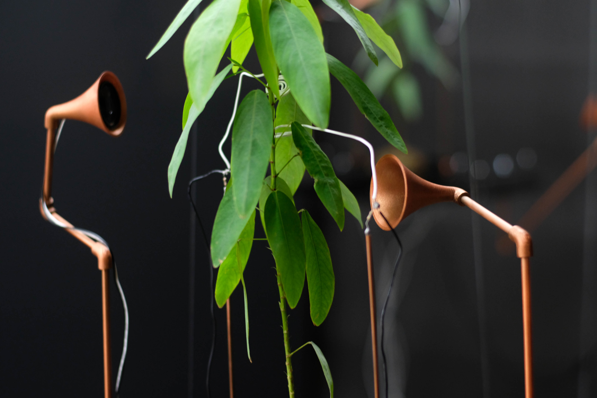

Coming to the Forest Atmosphere Area

Hearing
People are receiving information quickly for a long time. In the fast-paced life, they find that they lack calm and wait for answers or results, and they easily feel anxious cause they wait too long. But nature is the opposite of the present social environment.

Sound
Looking at the screen for a long time, the perception and insight of the real external environment may be greatly reduced. For children who have little contact with the natural environment, common conditions include plant blindness and lack of nature.